Fundamentals of statistical testing
Analysing Data
Click for handout
Today
- Normal distribution
- Sampling
- Sampling distribution
- Standard error
- Central Limit Theorem
It’s all Greek to me!
- \(\mu\) is the population mean
- \(\bar{x}\) is the sample mean
- \(\hat{\mu}\) is the estimate of the population mean
- Same with SD – \(\sigma\), \(s\), and \(\hat{\sigma}\)
- Greek is for populations, Latin is for samples, hat is for population estimates
Recap on distributions
- Numerically speaking, the number of observations per each value of a variable
- Which values occur more often and which less often
- The shape formed by the bars of a bar chart/histogram
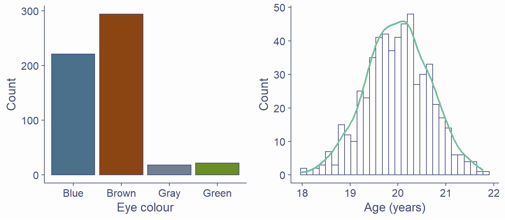
Known distributions
- Some shapes are “algebraically tractable”, e.g., there is a maths formula to draw the line
- We can use them for statistics
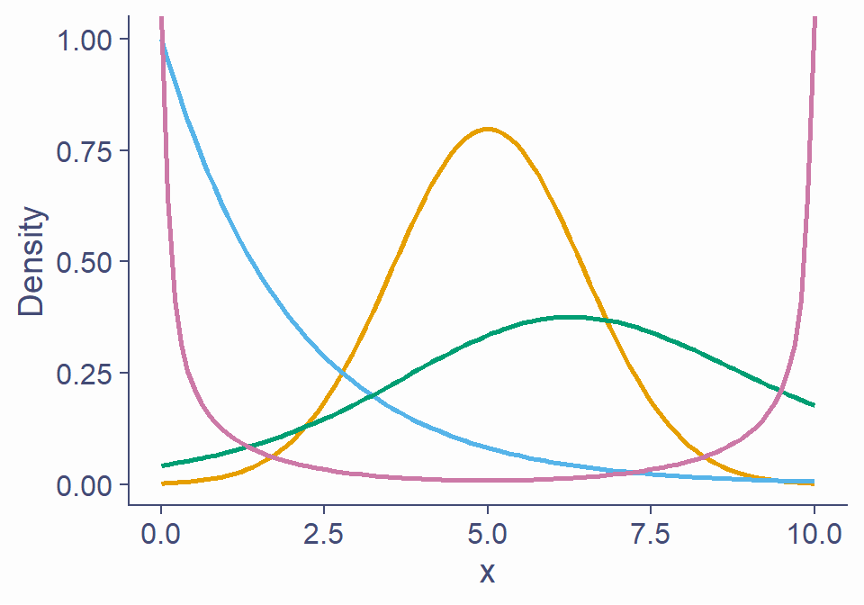
The normal distribution
- AKA Gaussian distribution, The bell curve
- The one you need to understand
- Symmetrical and bell-shaped
The normal distribution
- Not every symmetrical bell-shaped distribution is normal
- It’s also about the proportions – fixed
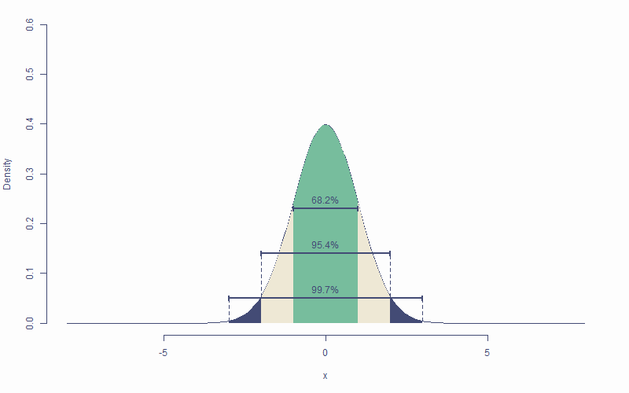
The normal distribution
- Peak/centre of the distribution is its mean (also mode and median)
- Changing mean (centring) shifts the curve left/right

The normal distribution
- Peak/centre of the distribution is its mean (also mode and median)
- Changing mean (centring) shifts the curve left/right
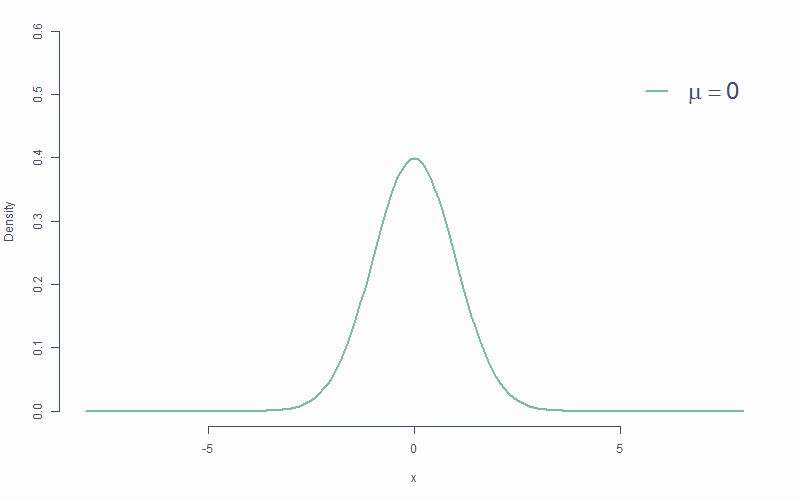
The normal distribution
- Peak/centre of the distribution is its mean (also mode and median)
- Changing mean (centring) shifts the curve left/right

The normal distribution
- SD determines steepness of the curve (small \(\sigma\) = steep curve)
- Changing SD is also known as scaling
The normal distribution
- SD determines steepness of the curve (small \(\sigma\) or \(s\) = steep curve)
- Changing SD is also known as scaling
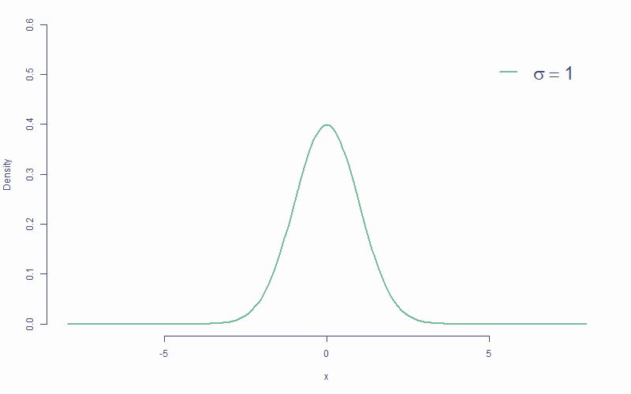
The normal distribution
- SD determines steepness of the curve (small \(\sigma\) or \(s\) = steep curve)
- Changing SD is also known as scaling

Area below the normal curve
- No matter the particular shape of the given normal distribution, the proportions with respect to SD are the same
- ∼68.2% of the area below the curve is within ±1 SD from the mean
- ∼95.4% of the area below the curve is within ±2 SD from the mean
- ∼99.7% of the area below the curve is within ±3 SD from the mean
- We can calculate the proportion of the area with respect to any two points
Area below the normal curve
- Say we want to know the number of SDs from the mean beyond which lie the outer 5% of the distribution
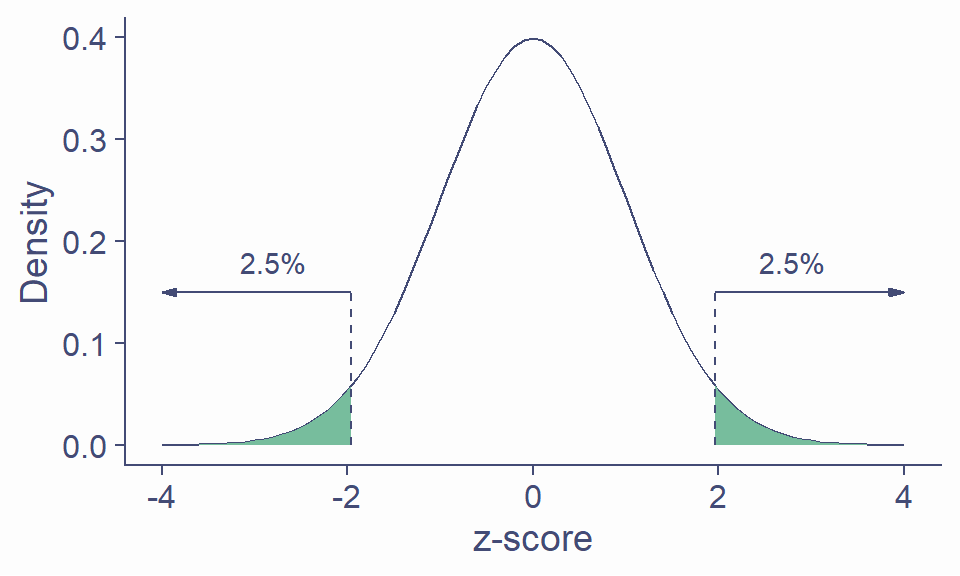
Critical values
- If SD is known, we can calculate the cut-off point (critical value) for any proportion of normally distributed data
qnorm(p = .005, mean = 0, sd = 1) # lowest .5%
[1] -2.575829
qnorm(p = .995, mean = 0, sd = 1) # highest .5%
[1] 2.575829
## most extreme 40% / bulk 60%
qnorm(p = .2, mean = 0, sd = 1)
[1] -0.8416212
qnorm(p = .8, mean = 0, sd = 1)
[1] 0.8416212- Other known distributions have different cut-offs but the principle is the same
Sampling from distributions
- Collecting data on a variable = randomly sampling from distribution
- The underlying distribution is often assumed to be normal
- Some variables might come from other distributions
- Reaction times: log-normal distribution
- Number of annual casualties due to horse kicks: Poisson distributtion
- Passes/fails on an exam: binomial distribution
Sampling from distributions
- Samples from the same population differ from one another
Sampling from distributions
- Statistics (\(\bar{x}\), \(s\), etc.) of two samples will be different
- Sample statistic (e.g., \(\bar{x}\)) will likely differ from the population parameter (e.g., \(\mu\))
sample1 <- rnorm(50, 100, 15); sample2 <- rnorm(50, 100, 15)
mean(sample1); mean(sample2)
[1] 99.05768
[1] 98.93935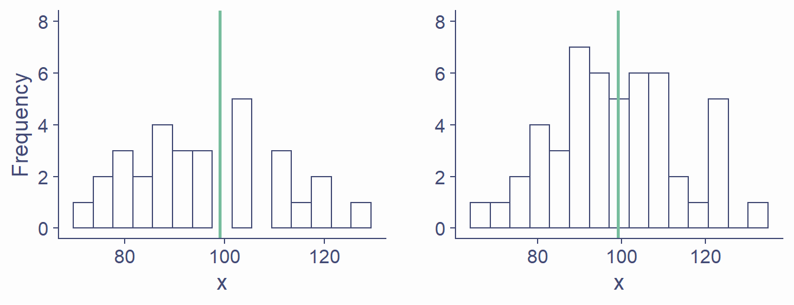
Sampling distribution
- If we took all possible samples of a given size (say N = 50) from the population and each time calculated \(\bar{x}\), the means would have their own distribution
- This is the sampling distribution of the mean
- Approximately normal
- Centered around the true population mean, \(\mu\)
- Every statistic has its own sampling distribution (not all normal though!)
Sampling distribution
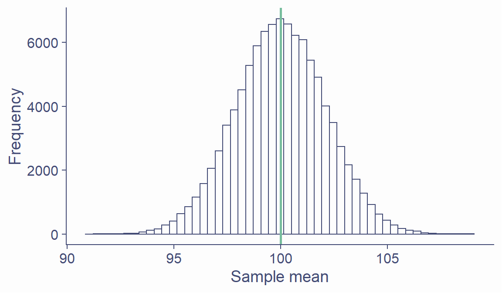
Standard error
- Standard deviation of the sampling distribution is the standard error
- Sampling distribution of the mean is approximately normal: ~68.2% of means of samples of size 50 from this population will be within ±2.12 of the true mean
Standard error
- Standard error can be estimated from any of the samples
\[SE = \frac{SD}{\sqrt{N}}\]
samp <- rnorm(50, 100, 15)
sd(samp)/sqrt(length(samp))
[1] 2.202707
## overestimate compared to actual SE
sd(x_bar)
[1] 2.121793- If ~68.2% of sample means lie within ±2.2, then there’s a ~68.2% probability that \(\bar{x}\) will be within ±2.2 of \(\mu\)
Standard error
- SE is calculated using N – there’s a relationship between the two
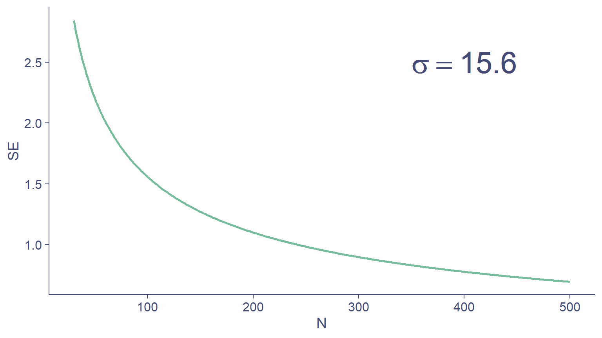
Standard error
- That is why larger samples are more accurate!
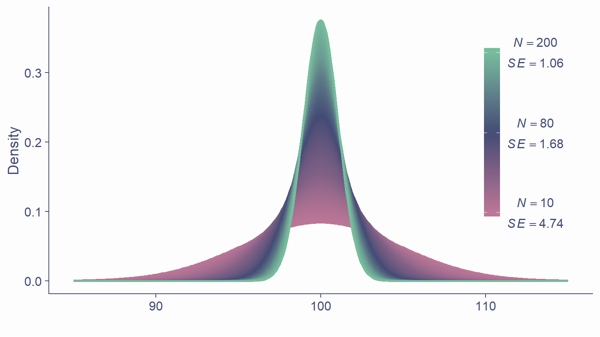
Standard error
- Allows us to gauge the accuracy of parameter estimate (e.g., \(\hat{\mu}\)) in sample
- The smaller the SE, the more confident we can be that the parameter estimate (\(\hat{\mu}\)) is close to population parameter (\(\mu\))
- We don’t particularly care about our specific sample – we care about the population!
The Central Limit Theorem
- Sampling distribution of the mean is approximately normal
- True no matter the shape of the population distribution!
- This is the Central Limit Theorem
- “Central” as in “really important” because, well, it is!
CLT in action

CLT in action

Approximately normal
- As N gets larger, the sampling distribution of \(\bar{x}\) tends towards a normal distribution with mean = \(\mu\) and \(SD = \frac{\sigma}{\sqrt{N}}\)
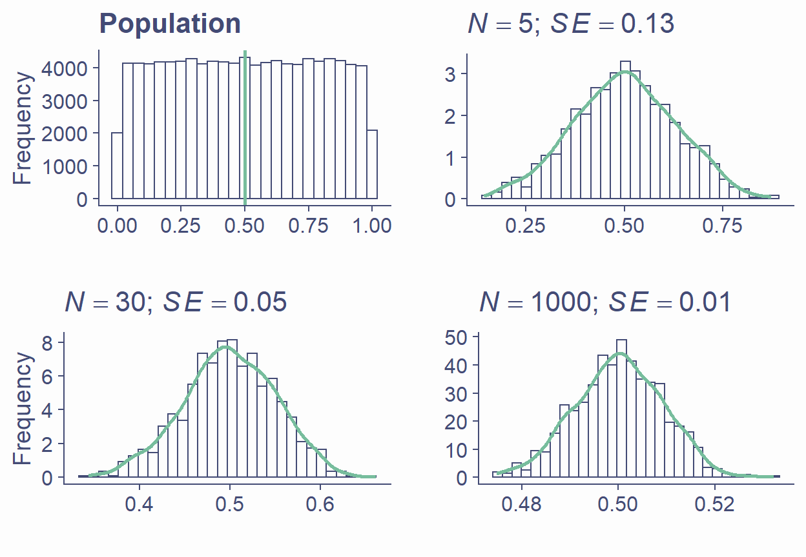
Take-home message
- Distribution is the number of observations per each value of a variable
- There are many mathematically well-described distributions
- Normal (Gaussian) distribution is one of them
- Each has a formula allowing the calculation of the probability of drawing an arbitrary range of values
Take-home message
- Normal distribution is
- continuous
- unimodal
- symmetrical
- bell-shaped
Take-home message
- Statistics of random samples differ from parameters of a population
- As N gets bigger, sample statistics approache population parameters
- Distribution of sample parameters is the sampling distribution
- Standard error of a parameter estimate is the SD of its sampling distribution
- Provides margin of error for estimated parameter
- The larger the sample, the more precise the estimate
Take-home message
- Central Limit Theorem
- Really important!
- Sampling distribution of the mean tends to normal even if population distribution is not normal
- Understanding distributions, sampling distributions, standard errors, and CLT it most of what you need to understand all the stats techniques we will cover
- Cool graphs are cool…